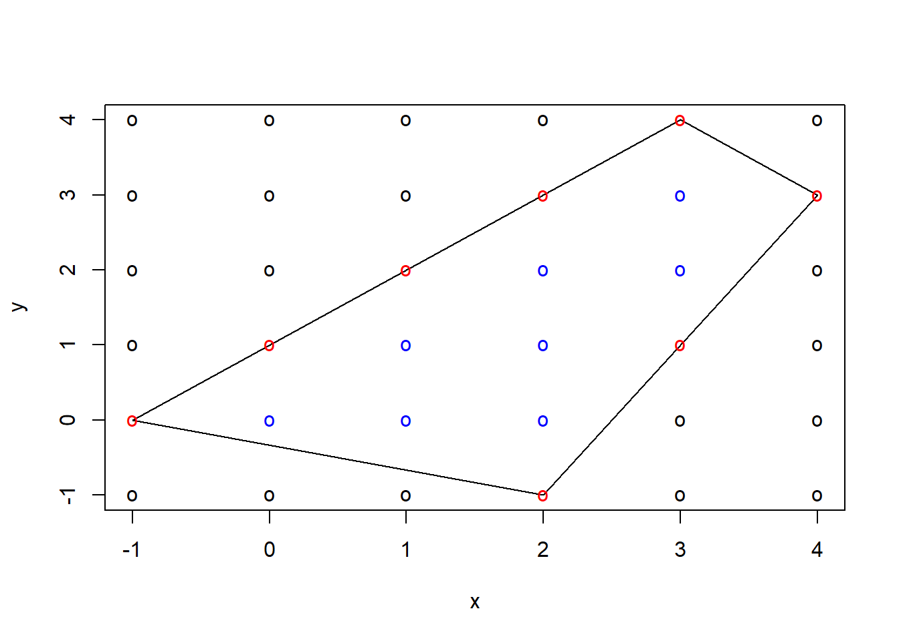
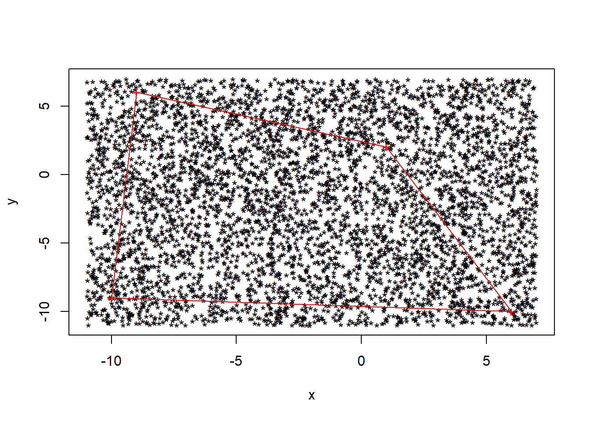
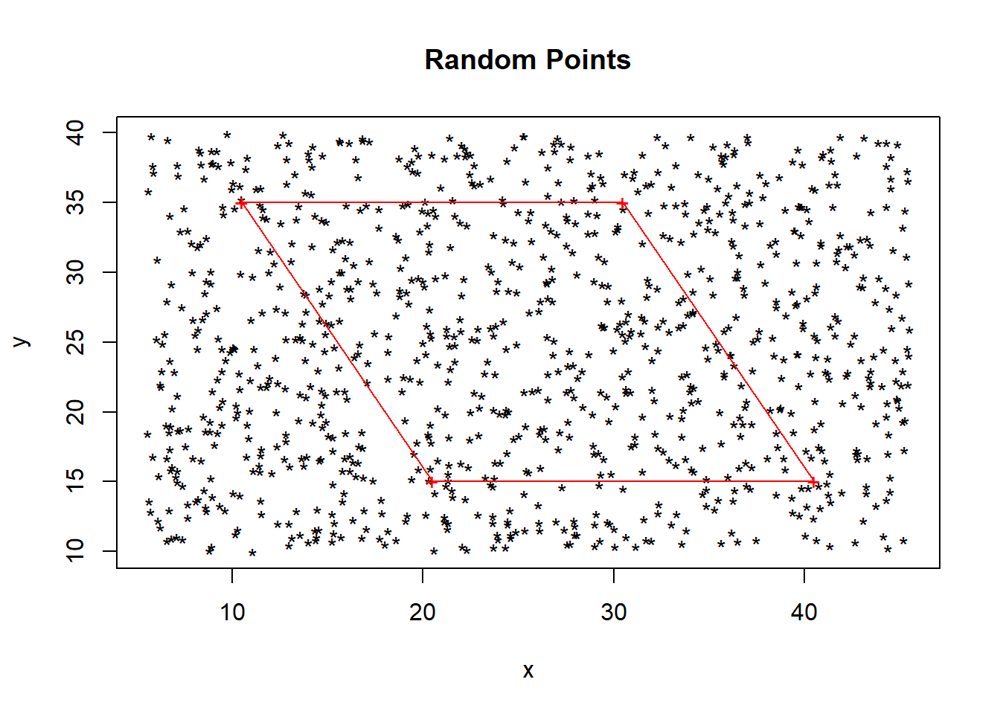
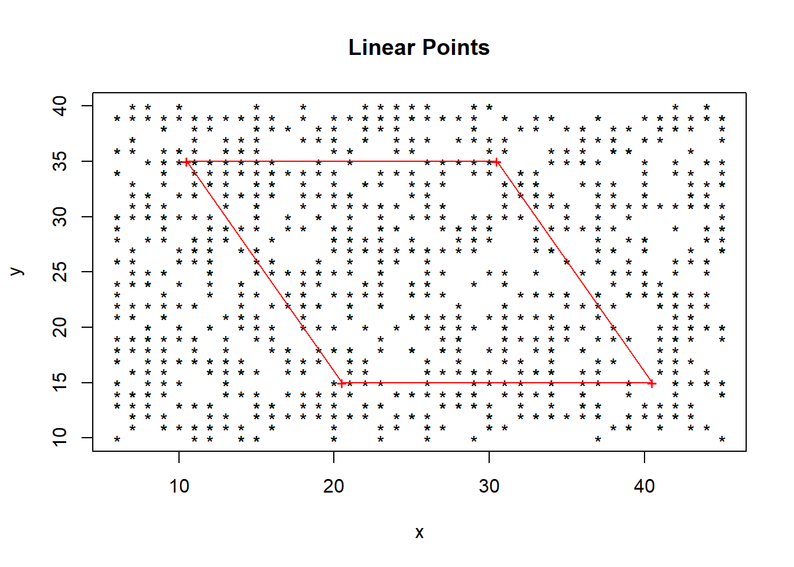
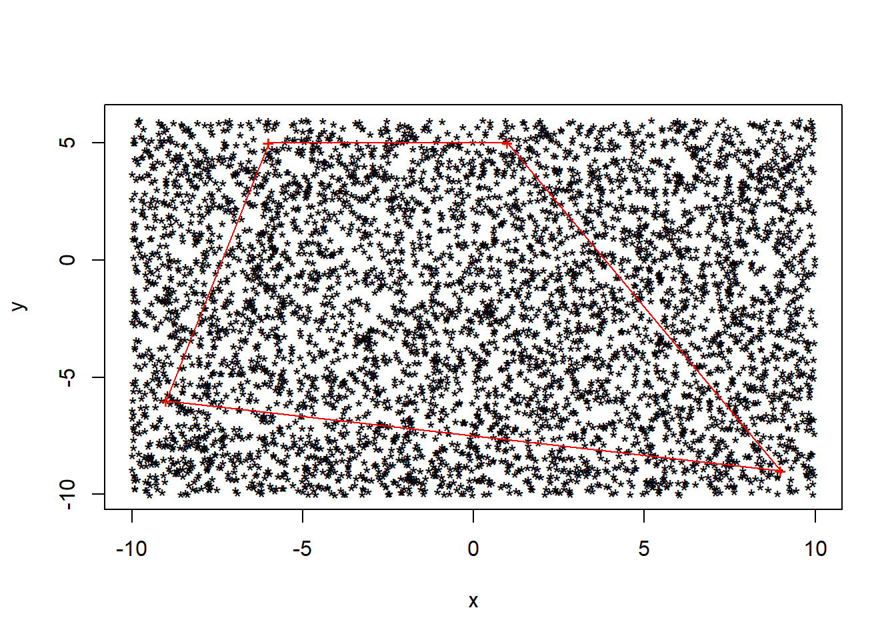

I investigated different ways of calculating the area of polygons. I investigated two ways; one being the Monte Carlo Method and the other being Pick’s theorem. Both these methods ivolve plotting points in different ways to help you calculate the areas of polygons.
Pick’s Theorem requires you to plot the polygon on a grid of dots where the vertices of the polygon lie on a dot each. The area is calculated using the formula: area \(= B/2 + I - 1\). B being the number of points in the grid that lies on either a side or vertex of the polygon. I is the number of points on the grid that lie within the polygon. This is shown below with the boundary points (B) hsown in red and the interior points (I) shown in blue. The number for B is 8 and the number for I is 8.

Using the equation we can calculate the area of the polygon: \(\frac{B}{2} + I - 1 \\=\frac{8}{2} + 8 - 1 \\ = 4 + 4 \\ = 8\)
This can also be used to calculate polygons with cut outs simply by applying Pick’s Theorem to the polygon then also to the cut out polygon then taking the cut out area away from the area of the larger polygon.
The second method i have investigated is the Monte Carlo Method is a method of calculating the area a polygon. This method can not calculate the exact value of the area of the polygon but simply provide an estimate of it. The premise of this method is to randomly generate many points within an area that the polygon is contained in, the area you are generating the points in must be known. Once you have generated a known amount of points you must calculate how many of the points are within the polygon. You can then calculate an estimate of the area using the equation area\(=\) known area \(\times\frac{P}{T}\)where P is the number of points within the polygon . The more randomly generated points the more accurate your estimate will be. Each randomly generated point has to be tested to see if it is within the polygon or not, for this i am using the method of calculating the angles produced between the vertices and the generated point. If the total of the angles is 180 degrees the point is inside, if it is not then the point is outside. The code for this is shown once ran below for a randomly generated polygon.

## [1] "The estimated area of the polygon is"## [1] 135.936I wanted to investigate wheter genrating random linear points or unlinear points would give a better estimate, I did this by running the same polygon with the two types of randomly generated points. To do this I decided to use the same shape of a known size to easily be able to compare the difference between the two methods and the difference to the true area.

## [1] "The estimated area of the polygon is"## [1] 200.4
## [1] "The estimated area of the polygon is"## [1] 201.6The shape I chose is a parallelogram of base size 20 and height oof 20, which by using \(\frac{1}{2} \times\)base\(\times\)height we get the area of the parallelogram to be 200.
I strted with 1000 points, i found that consistently the randomly generated poinys gave a slight under estimate and the linear points would give an over estimate, whilst increasing the amounts of points both estimates got closer to the true value but the random points gave more accurate values.
Had you not got a computer program to calculate the area for you the linear points would be amuch easier method to work with and produce an estimate, however overall it is much more accurate to use randomly generated points.
Below is the code used to produce the polygons and generate an estimate for the area. first my code randomly generates coordinates for the polygon, it generates the coordinates for each vertex in a seperate quadrant to prevent there from being any crossover of sides within the polygon. Once it has done this it finds the maximum and minimum values for the x and y-coordinates, this is used later to set the area the random points are generated in. It then uses a while loop to run a new randomly generated point 5000 times through the function that determines if it is inside or outside of the polygon. Once this is done it simply plots all the points along with the polygon, uses the maximum and minimum values to calculate the area of which the polygon is in then timeses it by the franction we have obtained to give our estimate of the area.
#Plotting the polygon
x <- c(round(runif(1,-10,0)),round(runif(1,0,10)),round(runif(1,0,10)),round(runif(1,-10,0)))
y <- c(round(runif(1,0,10)),round(runif(1,0,10)),round(runif(1,-10,0)),round(runif(1,-10,0)))
#Working out max and min values to calculate area
xmax = max(x)
xmin = min(x)
ymax = max(y)
ymin = min(y)
norm_vec <- function(x) sqrt(sum(x^2))
dot <- function(x,y) sum(x*y)
angle <- function(x,y){
theta <- acos(dot(x,y)/(norm_vec(x)*norm_vec(y)))
return(theta)
}
#setting coordinates and counts to be nothing
xcoords <- c()
ycoords <- c()
count = 0
out = 0
a = 0
#randomly gemerating points & working out if they are in or out of the polygon
while (a<5000){
px <- c(runif(1,xmin - 1,xmax + 1))
py <- c(runif(1,ymin - 1,ymax + 1))
p <- c(px,py)
total_angle <- 0
for (i in 1:length(x)){
if (i == length(x)){
vector1 <- c(x[i] - p[1], y[i] - p[2])
vector2 <- c(x[1] - p[1], y[1] - p[2])
total_angle <- total_angle + angle(vector1, vector2)
} else{
vector1 <- c(x[i] - p[1], y[i] - p[2])
vector2 <- c(x[i+1] - p[1], y[i+1] - p[2])
total_angle <- total_angle + angle(vector1, vector2)
}
}
if (round(total_angle, 5) == round(2*pi,5)){
count = count + 1
} else{
out = out + 1
}
a=a+1
xcoords <- c(xcoords,p[1])
ycoords <- c(ycoords,p[2])
}
#adding forst point to the end to plot polygon
xp <- c(x,x[1])
yp <- c(y,y[1])
#plottingpolygon and randomly generated points
plot(xcoords,ycoords,col="black",pch="*",xlab = "x", ylab = "y")
points(xp,yp,col="red",pch="+")
lines(xp,yp,col="red")
#calculating area of polygon
total_area = (xmax - xmin)*(ymax - ymin)
frac_area = count/(count+out)
area = c(total_area * frac_area)
print("The estimated area of the polygon is")## [1] "The estimated area of the polygon is"print(area)## [1] 117.5832